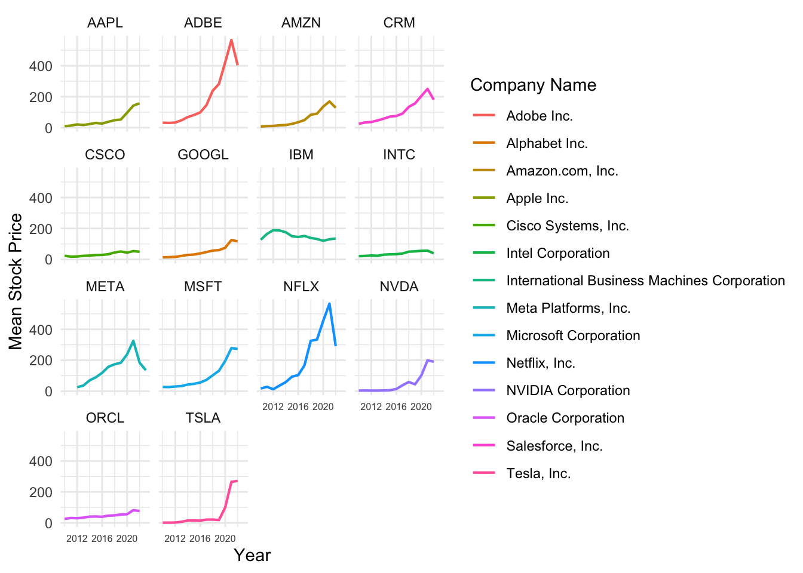
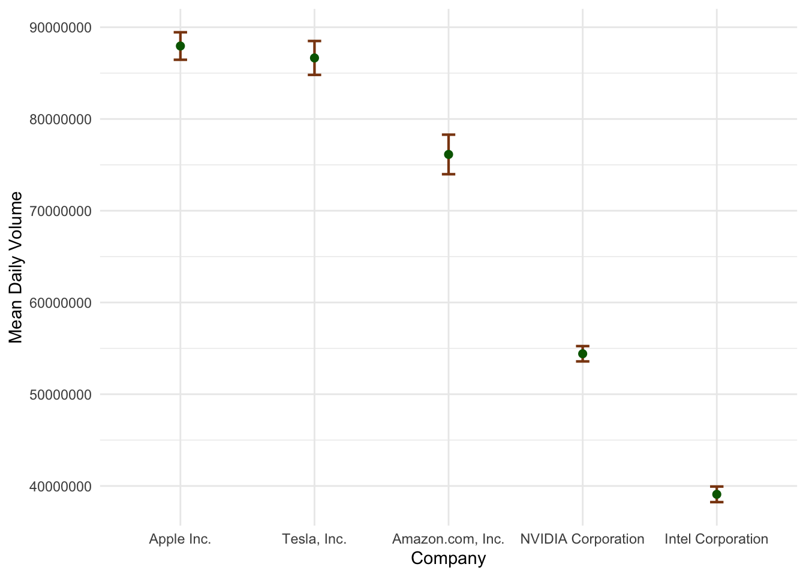
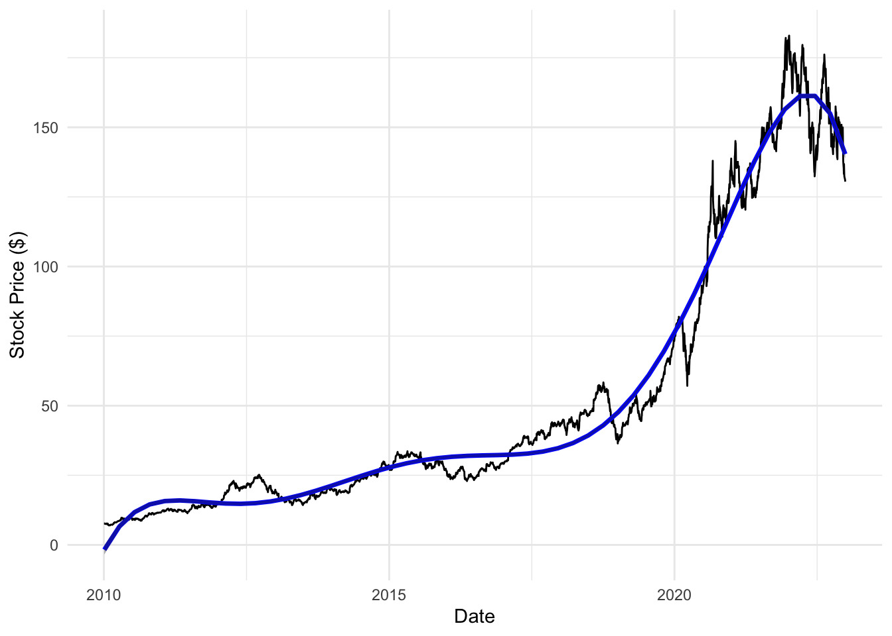

library(tidyverse)
library(tidytuesdayR)
library(lubridate)
library(forecast)
library(openintro)
library(broom)
library(modelr)
theme_set(theme_minimal())
tuesdata <- tidytuesdayR::tt_load('2023-02-07')
tuesdata <- tidytuesdayR::tt_load(2023, week = 6)
big_tech_stock_prices <- tuesdata$big_tech_stock_prices
big_tech_companies <- tuesdata$big_tech_companies
stocks <- big_tech_stock_prices |>
left_join(big_tech_companies, by = c("stock_symbol" = "stock_symbol")) |>
relocate(company) |>
mutate(weekday = weekdays(date),
month = month(date, label = TRUE),
year = year(date))Big Tech Stock Prices Data Set Introduction
These data come from Yahoo Finance via Kaggle, compiled by Evan Gower. This data set consists of 8 variables involved in the daily stock prices and volumes of 14 of the largest tech companies and has 45,088 total observations. This data set includes the daily high and low stock prices of these 14 different tech companies (only recorded on weekdays) from the start of 2010 through the end of 2022. I found this data set from tidytuesday on GitHub from the following URL: https://github.com/rfordatascience/tidytuesday/blob/master/data/2023/2023-02-07/readme.md.
Questions of Interest
- How have stock prices changed for these big tech companies over the past 12 years?
- Which companies get the most yearly trading volume in the most recent year of the data set (2022)?
- For the most popular company (Apple.com), can we make a model to accurately predict its stock prices?
Variables of Interest
- company: the full name of the company
- stock_symbol: the stock symbol of the company
- date: date of observation
- volume: number of shares traded (buys and sells) for the day
- high: the highest market price for the day, in dollars per share
How have stock prices changed for these big tech companies over the past 12 years?
yearly_price = stocks |>
group_by(stock_symbol, year) |>
summarise(mean_price = mean(high),
sd_price = sd(high),
sample_size = n()) |>
mutate(se = sd_price / sqrt(sample_size), ## se for means
lower = mean_price - se,
upper = mean_price + se) |>
left_join(big_tech_companies)
ggplot(data = yearly_price, aes(x = year, y = mean_price, col = company)) +
geom_line(linewidth = 0.75) +
facet_wrap(~stock_symbol) +
theme(axis.text.x.bottom = element_text(size = 6)) +
labs(x = "Year", y = "Mean Stock Price", col = "Company Name")
Visual Takeaways: For most of these big tech companies, there is generally an increase in mean stock price over time. This makes sense as tech is still considered a growing industry. Adobe and Netflix both have similar mean price trends: a steady increase in mean price until around 2020, immediately followed by a sharp drop. Most of these companies also see a decline in mean stock price after 2020. Tesla is also an interesting trend to point out: low and constant until 2019 when Tesla stock prices saw a very sharp increase up to almost $300 per share in 2020.
Which companies get the most yearly trading volume in the most recent year of the data set (2022)?
yearly_volume = stocks |>
group_by(company, year) |>
summarise(mean_volume = mean(volume),
sd_volume = sd(volume),
sample_size = n()) |>
mutate(se = sd_volume / sqrt(sample_size), ## se for means
lower = mean_volume - se,
upper = mean_volume + se)
top_5_summary = yearly_volume |> filter(year == 2022) |>
arrange(desc(mean_volume)) |>
filter(company == "Apple Inc." || company == "Tesla, Inc." || company == "Amazon.com, Inc." || company == "NVIDIA Corporation" || company == "Intel Corporation") |>
ungroup() |>
mutate(company = fct_reorder(company, -mean_volume))
options(scipen=100)
ggplot(data = top_5_summary, aes(x = company, y = mean_volume)) +
geom_errorbar(aes(ymin = lower, ymax = upper), col = "saddlebrown", width = 0.1, linewidth = 0.75) +
geom_point(col = "darkgreen", size = 2) +
labs(x = "Company", y = "Mean Daily Volume")
Visual Takeaways: Apple and Tesla are the most popular stocks to trade in 2022, with a mean daily trading volume of nearly 90 million. The error bars are \(\pm 1 se\), and these illustrate the variability in the daily mean for the whole year of 2022. There is far less variance in volume for NVIDIA and Intel companies than Apple, Tesla, and Amazon. This means that there is less volatility in daily trading volume for NVIDIA and Intel Corporations.
For the most popular company (Apple.com), can we make a model to accurately predict its stock prices?
apple_stocks = stocks |> filter(stock_symbol == "AAPL")
mod_apple <- lm(high ~ poly(date, degree = 6), data = apple_stocks)
grid <- apple_stocks |>
data_grid(
date = seq_range(date, n = 50))
aug_apple <- augment(mod_apple, newdata = grid,
interval = "confidence")
ggplot(data = apple_stocks, aes(x = date, y = high)) +
geom_line() +
geom_line(data = aug_apple, aes(x = date, y = .fitted),
colour = "blue", linewidth = 1.2) +
geom_ribbon(data = aug_apple, aes(y = .fitted,
ymin = .lower,
ymax = .upper),
alpha = 0.4) +
labs(x = "Date", y = "Stock Price ($)")
glance(mod_apple)# A tibble: 1 × 12
r.squared adj.r.squared sigma statistic p.value df logLik AIC BIC
<dbl> <dbl> <dbl> <dbl> <dbl> <dbl> <dbl> <dbl> <dbl>
1 0.978 0.978 7.06 24570. 0 6 -11031. 22078. 22127.
# ℹ 3 more variables: deviance <dbl>, df.residual <int>, nobs <int>Visual Takeaways: The black curve is the observed stock prices for Apple.com and the blue curve is the the model used to predict Apple stock prices. Although it’s hard to see, there is also a shaded region around the blue curve that represents the 95% confidence interval for the model’s fitted values. The model seems to fit the actual trend in Apple stock price decently well (\(R^2 = 0.978\)).
Conclusion
This data set was very interesting to explore, and I wish I had more time to delve into the data even deeper. There are certainly some flaws in just using a 6th degree polynomial to model the trend in Apple stock prices as there are certainly better methods that would be more appropriate to model this trend. Additionally, faceting the first graph makes it easier to visualize individual trends in stock prices, but makes it slightly harder to compare trends.
If I had more time on this data, I would definitely try to find a better modeling technique to better fit Apple stock prices.
Connections to Class Ideas
- In the second and third visualizations, I expressed the variability in the data using error bars and a shaded 95% interval region, respectively
- I also extended our linear modeling visualization work into visualizing a polynomial, I would like to also extend this method to certain pertinent statistical learning techniques